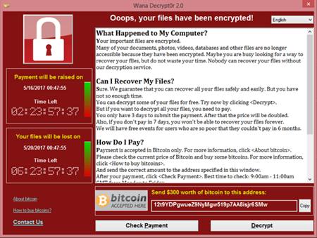
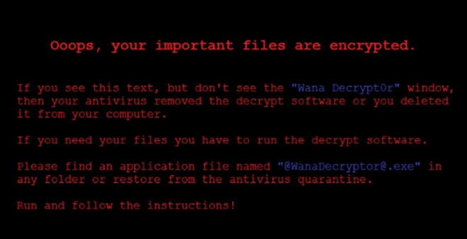

Images Credit: WannaCry ransomware used in widespread attacks all over the world (SecureList by Kaspersky)
Left image is the GUI of WannaCry's decryptor, right image is what WannaCry sets the wallpaper to upon activation of its payload.
In summary, ransomware is a type of malicious program
whose primary purpose is to extort something
(money, data, etc) from users of victim machines.
Ransomware is also usually a virus and/or worm, as it uses similar
characteristics in order to spread across the Internet.
Below, I have included a table with some of the most well-known ransomwares.
(Sourced from Security Scorecard, link is at the bottom of this page)
| Ransomware Name | Year Seen | Ransomware Description |
| WannaCry | 2017 | An allegedly North Korean worm aimed at extorting
$300 USD worth of Bitcoin (BTC) out of each victim. Upon activation of the payload, it would encrypt almost every file present on the operating system. Thanks to the EternalBlue vulnerability, WannaCry was able to infect 230,000 machines in less than a day. |
| Reveton | 2012 | This ransomware evolved from the classic law enforcement
scam. What sets Reveton apart from the average scam is that it first covertly infects systems. Once the payload is finally activated, it will lock the user out of their system and display a fradulent message. Sometimes, it will even activate the victim's microphone and webcam to scare into paying "fines" to the "authorities" for "illegal activity." Unlike WannaCry, this ransomware has been replicated countless times. Thus, while Reveton was the first to use ransomware for this kind of scam, it was not the last. |